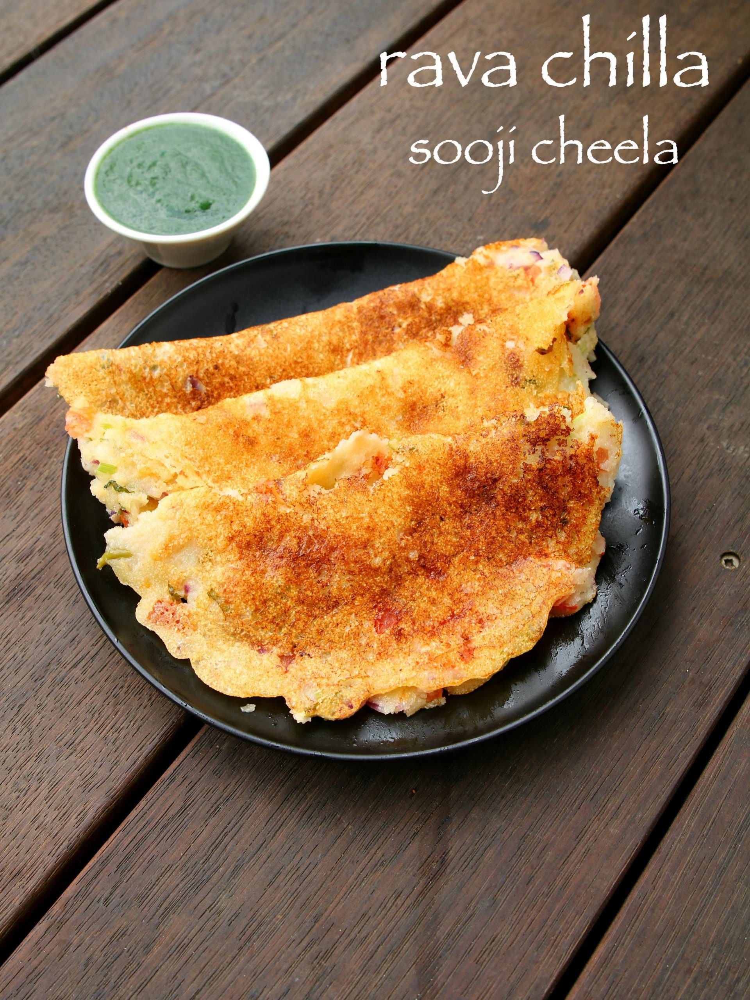

Rava Chilla Recipe

Description
Sooji ka cheela, or some say, Rava chilla is served for early morning breakfast with choice of chutney and tomato sauces. But it is also a very good alternative for daily lunch boxes. In addition plain rava chilla can also be served during upvas or as vrat recipes.
Ingredients:
- 1 cup rava / sooji / semolina, coarse
- ½ cup curd / yogurt
- ½ tsp salt
- 1 cup water
- tbsp onion, finely chopped
- tbsp tomato, finely chopped
- green chilli, finely chopped
- tsp ginger paste
- tbsp coriander leaves, finely chopped
- for roasting chilla
Steps
- Firstly, in a large bowl take 1 cup rava and ½ cup curd.
- Also add ½ tsp salt and ¾ cup water.
with the help of whisk, mix well without forming any lumps.
- Rest for 20 minutes or till rava swells completely.
- Further add 2 tbsp onion, 2 tbsp tomato, 1 green chilli,½ tsp ginger paste and 2 tbsp coriander leaves.
- Mix well and add water if required to get thick flowing consistency batter.
- Now grease the dosa pan with oil and spread a ladleful of batter thickly.
- Now grease the dosa pan with oil and spread a ladleful of batter thickly.
- Pour ½ to 1 tsp of oil around the edges.
- Cover and cook the chilla for 2 minutes or till it gets cooked well.
- Flip over and press gently making sure chilla gets cooked from both sides.
- Continue to simmer for another minute or till chilla gets cooked completely.
- Finally, serve rava chilla / suji ka cheela with green chutney or as it is.
Homepage